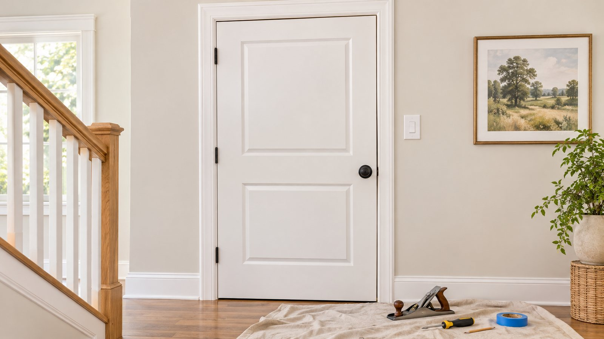
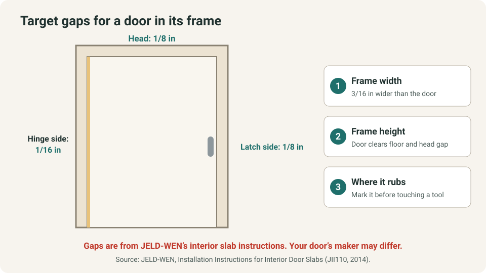
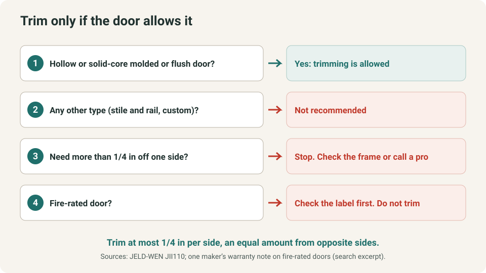
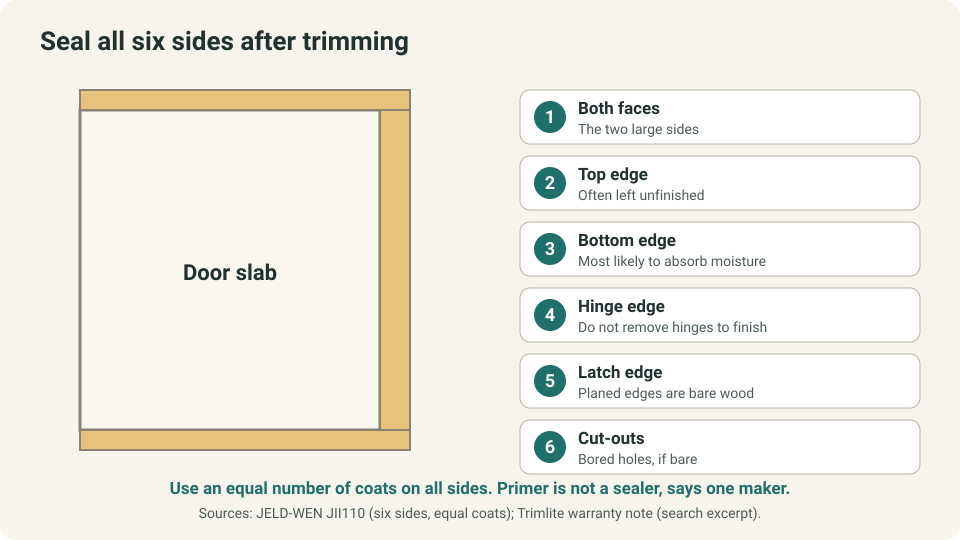

WEEKEND PROJECTS · DOORS
How to Fix a Sticking Interior Door (Find Where It Rubs)

A door that sticks usually rubs in one spot, and the cause is rarely the door alone. It can be loose hinges, swollen wood from humidity, or a frame that has moved. This guide uses JELD-WEN’s published interior-door instructions for the target gaps and the trimming limits, and explains why you check before you plane.
The quick answer
- Mark where it rubs first. A fix on the wrong edge makes the gap worse.
- Check hinges and humidity before the plane. Loose hinge screws and swollen wood are easier to fix than a trimmed door.
- Know the target gaps. JELD-WEN’s instructions allow about 1/16 inch on the hinge side and 1/8 inch at the head and latch side.
- Trim only what the door allows, at most 1/4 inch per side on hollow or solid-core molded and flush doors, then seal all six sides.
Quick plan
| Item | Detail |
|---|---|
| Time | Often under an hour for hinges and a small plane job, plus drying time for sealer or paint |
| Tools | Screwdriver, pencil, tape measure, masking tape, sandpaper, a plane or fine-toothed saw if trimming |
| Best for | Interior doors that rub in one place on a frame that is square |
| Not for | Fire-rated doors, doors in a frame that has moved, or paint that may contain lead until you take precautions |
Step 1: Find where the door rubs
Close the door slowly and look at the gaps around it. JELD-WEN’s instructions describe the target when a slab is fitted: a frame 3/16 inch wider than the door, which leaves 1/16 inch of clearance on the hinge side and 1/8 inch on the latch side, and 1/8 inch at the head. The frame must also be tall enough for the door to clear the floor.

- Look for shiny or worn spots, paint scuffs and tight gaps along the edges.
- Mark each rubbing spot with a pencil. A thin strip of paper slid around the closed door shows where it grips (our method).
- Measure the gaps at the top, hinge side and latch side, and compare them with the targets above.
Those figures are from one maker’s instructions for new slabs, so treat them as a guide, not a rule for your frame.
Step 2: Check the hinges first
A door that rubs at the top of the latch side or the bottom of the hinge side may be dropping on loose hinges, our reading rather than a statement from the source.
- Tighten every hinge screw by hand. JELD-WEN’s screws are 3/4 inch minimum through the hinges into the slab and frame, and it recommends a hand screwdriver in the slab to prevent stripping.
- For a solid-core door, JELD-WEN installs a #9 × 2 1/2 inch screw in the center hole of the top two hinges, through the leaf toward the jamb, to pull the door toward the framing. Check whether yours has them.
- Check that hinges sit flush in their mortises. A proud hinge can hold the door off the frame.
See our guide to adjusting kitchen cabinet hinges for how adjustable concealed hinges differ from the plain butt hinges on most interior doors.
Step 3: Think about humidity
Masonite Architectural’s care guide, which we saw as a search excerpt, says wood absorbs moisture in high humidity and swells, which raises the dimensions of door parts. JELD-WEN recommends 30% to 50% relative humidity when storing doors, with temperatures from 50°F to 90°F, and says to install in dry conditions.
If a door only sticks in humid weather, swelling is likely, and trimming it may leave a gap in dry months. Our guide to reducing bathroom condensation covers one common source of moisture, and the guide to stopping a drafty door covers a different problem at the same edges.
Step 4: Check the frame
If the door rubs everywhere or the gaps taper, the frame may have moved. JELD-WEN sets its limits for a frame: out of square by no more than 1/4 inch, level and plumb to within 1/8 inch, and the opening in a single plane, with less than 1/8 inch of twist. Measure the frame’s diagonals; if they differ by more than 1/4 inch, or the jamb is visibly out of plumb, that is a frame problem, and planing the door will only hide it.
Step 5: Trim only if the door allows it

- Which doors. JELD-WEN says a maximum of 1/4 inch can be trimmed from each side of hollow or solid-core molded and flush doors only, and trimming any other type is not recommended.
- How much. Trim an equal amount from opposite sides for the best appearance.
- How. Stick masking tape along the cut line on both faces to limit chipping, make cuts with a fine-toothed saw for height and a plane for width, and re-bevel if the edge was beveled. The latch edge may have a 2° or 3° bevel, so that it clears the jamb.
- Fire-rated doors. One maker’s warranty note, seen as a search excerpt, says no trimming allowance is warranted on fire-rated doors. Check the label first and do not trim without guidance.
Worked example (illustrative). The latch side measures 1/16 inch where the target is 1/8 inch. That is 1/16 inch to remove, well within the 1/4 inch limit, so a light plane on the latch edge may do, if the hinges and frame check out first.
Step 6: Seal all six sides after trimming

JELD-WEN says the slab should be finished on all six sides with an equal number of coats after all routing, trimming, boring and touch-up are done and it fits the jamb, and not to remove hinges that are already installed. A trimmed edge is bare wood, so it will take on moisture again unless it is coated. A Trimlite warranty note we saw as a search excerpt adds that primer does not function as a sealer or moisture barrier.
Before sanding or planing painted edges: JELD-WEN’s safety note says to take proper precautions if lead paint is suspected (commonly used before 1979) and points to the EPA, and warns that sawing or sanding wood makes wood dust, so use a respirator.
Step 7: Test and live with it
- Close the door and recheck the three gaps.
- Open and close it several times, and check it latches without lifting or pulling.
- Check again in a different season. A door that sticks only in humid months may need humidity control rather than trimming.
Quick win (5 minutes)
Tighten every hinge screw by hand before you reach for a plane. A loose top hinge is the most common reason a door starts to rub, and you may be done in a minute.
Common mistakes
- Planing before checking the hinges and the frame.
- Taking more than 1/4 inch off one side.
- Leaving trimmed edges as bare wood.
- Painting only the faces, or using primer as a sealer.
- Sanding old paint without lead precautions.
- Trimming a fire-rated door.
When to call a professional
- The frame is out of square, out of plumb or twisted beyond the limits above.
- The door is fire-rated or has a label you do not understand.
- You would have to remove more than 1/4 inch from a side.
- The door is warped or swollen beyond a small plane job.
- Old paint may contain lead and you are not set up to work safely.
FAQ
Why does my door stick only in summer?
Wood swells in high humidity, which Masonite Architectural’s care guide states in general terms. A small plane job may leave a gap in dry months, so try humidity control or sealing first.
How much can I trim off a door?
JELD-WEN allows a maximum of 1/4 inch from each side of hollow or solid-core molded and flush doors only, and does not recommend trimming other types.
Do I have to paint the edges?
Yes. JELD-WEN says to finish all six sides with an equal number of coats after trimming. One maker adds that primer is not a sealer.
Can I use longer hinge screws?
JELD-WEN uses #9 × 2 1/2 inch screws in the top two hinges of solid-core, custom carved and stile-and-rail doors, into the framing. Do not treat that as a rule for a hollow-core door or a different frame.
What if the frame is out of square?
JELD-WEN’s limits are 1/4 inch out of square and 1/8 inch for level and plumb. If your frame is beyond that, planing the door only hides it and a pro should look.
Can I trim a fire-rated door?
Check its label first. One maker’s warranty note says no trimming allowance is warranted on fire-rated doors.
What this guide assumes
It covers a wood interior door on hinges in a typical U.S. home, using JELD-WEN’s slab instructions as the main source. The Masonite and Trimlite points were read as search excerpts only. The suspected-cause and paper-strip tips are our own. HomeProjectWise has not fixed this door, and we do not endorse a brand or product.
Keep going
- Stop a drafty door without replacing it for sealing gaps at the same edges.
- How to adjust kitchen cabinet hinges for doors that rub or sag.
- How to reduce bathroom condensation for one source of swelling moisture.
Sources and last checked
The JELD-WEN instructions were opened and read in full on 16 November 2026. The Masonite and Trimlite documents were read only as search excerpts, so we cite them for one statement each. These are product documents for specific doors, and your own door’s instructions override them.
- JELD-WEN, Installation Instructions for Interior Door Slabs (JII110, 12/2014), hosted by The Home Depot: https://images.thdstatic.com/catalog/pdfImages/73/7339d7ab-069c-48a6-bc7d-1c390e2c8c28.pdf
- Masonite Architectural, Care and Handling Instructions (2023), hosted by CDF Distributors (search excerpt only): https://www.cdfdistributors.com/wp-content/uploads/2023/09/tech-care-and-handling_v3_rev10_17_f.pdf
- Trimlite, interior door limited warranty (05/2023), hosted by Lowe’s (search excerpt only): https://pdf.lowes.com/productdocuments/c9bf2ea9-5375-4f93-93eb-fe818f3ff5b5/70069628.pdf